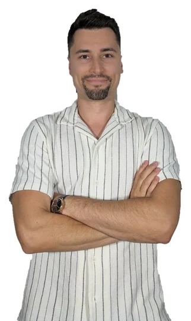
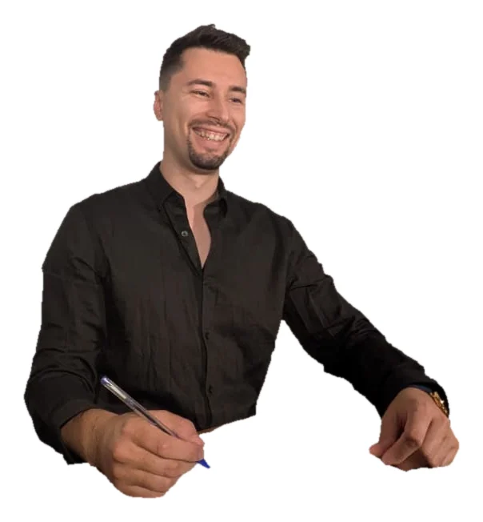

Un bras droit à temps partagé, pour les entreprises trop petites pour en recruter un.
Tu portes ta boîte seul et tout passe par toi : je t'aide à la structurer pour qu'elle dépende moins de toi.

« Grâce à lui, nous avons gagné en productivité, en visibilité sur nos projets, et en efficacité globale. »Nicolas, CEO de Codaza, client
- salariés pilotés au sein d'une PME multi-sites
- 70
- établissements et marques gérés en même temps
- 7
- recrutements menés
- +100
Tu te reconnais dans une de ces phrases ?
- « Je fais cinq métiers à la fois, et aucun correctement. »
- « Sans moi, l'équipe ne prend aucune décision. »
- « La boîte grandit, mais ça ne pourra pas durer comme ça. »
- « Si je lève le pied, tout s'écroule. »
- « Je ne peux pas partir en vacances sans garder un œil sur mon téléphone. »
Si c'est encore toi qui...
- réponds à chaque question difficile
- valides chaque grosse décision
- bouches chaque trou
tu n'as rien raté.
Tu as construit ta boîte autour de toi, parce que c'était la seule façon de la lancer.
Aujourd'hui, elle a besoin d'une organisation qui tienne sans que tout passe par toi.
Mon rôle :que tu travailles sur ton entreprise, et pas uniquement dedans.
À qui s'adresse cet accompagnement
C'est pour toi si...
- Ta boîte a grandi plus vite que son organisation : pas de fiches de poste, pas de tableau de bord, des décisions prises à l'instinct.
- Tu veux un regard extérieur sur ce que tu pressens déjà, sans y passer six mois de diagnostic.
- Tu prépares une transmission, une revente ou un cap de croissance, et tu veux structurer avant d'y être.
Ce n'est peut-être pas le bon moment si...
- Ton entreprise ne fait pas encore de chiffre d'affaires, ou elle démarre tout juste.
- Tu n'es pas prêt à mettre en place les changements.
- Tu veux qu'on te remette un modèle tout fait, et te débrouiller seul avec le reste.
Quand l'accompagnement correspond à ta situation, les résultats sont meilleurs pour tout le monde autour de la table.
Une boîte qui grandit de façon rentable, avec une équipe autonome
J'installe l'organisation qui le permet. Je travaille avec toi, sur tes vrais dossiers, et je reste après la mission.
Vision et stratégie
Savoir où va ta boîte.
Un état des lieux complet de ton entreprise et de toi-même, transformé en plan d'action. Après la mission, un suivi trimestriel, parfois une place au comité de direction, pour ne plus décider seul.
Gestion humaine
Une équipe qui sait quoi faire.
Des rôles clairs, la bonne personne au bon poste, de la délégation. Ton équipe sait qui décide quoi, et tu n'es plus le point de passage obligé.
Systèmes et IA
Décider avec des chiffres.
Process, outils, connaissance partagée dans l'équipe, et un pilotage simple : trésorerie, marges, indicateurs clés. Tu sais si tu peux prendre un client de plus, et à partir de quand.
Un exemple en vidéo : générer des leads qualifiés avec Claude →Du premier échange au suivi dans la durée
Premier contact
Nous parlons de ta situation et de tes objectifs, sans engagement.
Diagnostic
État des lieux de six dimensions : vision, humain, données, gestion des problèmes, process et suivi de l'exécution.
Plan d'action
Nous priorisons, et nous choisissons ensemble le chantier le plus utile.
Mise en œuvre
Outils concrets, formation, accompagnement au changement.
Suivi long terme
Jusqu'à 12 mois, parfois une place au comité de direction.
Ce qu'en dit un dirigeant que j'ai accompagné
Axel a été un véritable atout pour Codaza. Il m'a accompagné dans la mise en place d'une stratégie claire et efficiente pour l'entreprise, en allant bien au-delà du simple conseil. Il s'est impliqué concrètement dans le déploiement du plan d'actions, avec un vrai souci du détail et une excellente compréhension des enjeux internes. Grâce à lui, nous avons gagné en productivité, en visibilité sur nos projets, et en efficacité globale. Il agit comme un bras droit, en immersion totale dans l'entreprise, avec une approche à la fois humaine, structurée et impactante.

Je m'appelle Axel Brunon
Avant de me mettre à mon compte, j'ai managé des équipes en grande distribution, puis dirigé les opérations d'un groupe multi-sites présent dans deux pays.
Je suis un sparring partner pour les chefs d'entreprise : je les challenge pour faire avancer les choses, et je m'intègre à l'équipe le temps qu'il faut.
Basé près de Lyon, j'interviens partout en France, sur place ou à distance.
Où en est ton organisation ?
17 questions, 5 minutes. Tu reçois par email ton score sur 100, ton profil et la dimension de ton organisation où le score est le plus faible.
Dans chaque cas, je te propose ensuite un échange gratuit de 30 minutes pour en parler.
Choisis une tranche pour lire le profil correspondant.
L'entreprise tourne autour de toi
Tu es partout parce que tu as toujours été la solution la plus fiable. Cela a un coût : ton temps, ton énergie, et la capacité de ton entreprise à grandir sans toi.
Ce qu'on me demande avant de réserver
Combien ça coûte ?
| Accompagnement COO externalisé | 160 € / heure |
| Atelier | à partir de 800 € la demi-journée |
| Process automatisé et IA clé en main | à partir de 1 000 € |
| Échange de découverte | 30 min, gratuit |
Combien de temps ça me prend, à moi ?
Il dépend de l'ampleur du travail.
Ma boîte est petite, est-ce que ça vaut le coup ?
Je travaille justement avec des chefs d'entreprise à la tête d'une équipe de 3 à 15 personnes, trop petite pour recruter un bras droit à temps plein. Tu fais appel à moi pour le volume d'heures dont tu as besoin.
J'ai déjà été accompagné, ça n'a rien donné. En quoi c'est différent ?
Je m'intègre à ton équipe et je travaille sur tes vrais dossiers : fiches de poste, organigramme, tableaux de bord, plan d'action. Je reste disponible après la mission, avec un suivi jusqu'à 12 mois. Tu ne reçois pas un rapport à ranger dans un tiroir.
Tu interviens où ?
Partout en France, sur place ou à distance. Je suis basé près de Lyon.
COO externalisé, à temps partagé, fractional : quelle différence ?
Aucune : ce sont plusieurs noms pour le même rôle, un bras droit qui pilote les opérations à temps partagé dans ton entreprise, sans recrutement à temps plein.
Que se passe-t-il pendant l'échange de 30 minutes ?
Nous regardons ce que révèle ta situation, les points de levier prioritaires, et si et comment je peux t'accompagner concrètement. C'est gratuit et sans engagement.
Derniers articles
Ton entreprise dépend-elle trop de toi ? 6 signes à vérifier
6 signes qu'une entreprise repose trop sur son dirigeant, et par où commencer pour la rendre plus autonome.
Lire l'articleCOO externalisé en PME : rôle, coût et cadrage de la mission
COO externalisé en PME : ce qu'il fait, quand y recourir, combien ça coûte et comment cadrer la mission pour rendre l'entreprise plus autonome.
Lire l'articleParlons de ta situation, 30 minutes, sans engagement.
- Ce que révèle ta situation
- Les points de levier prioritaires
- Si et comment je peux t'accompagner